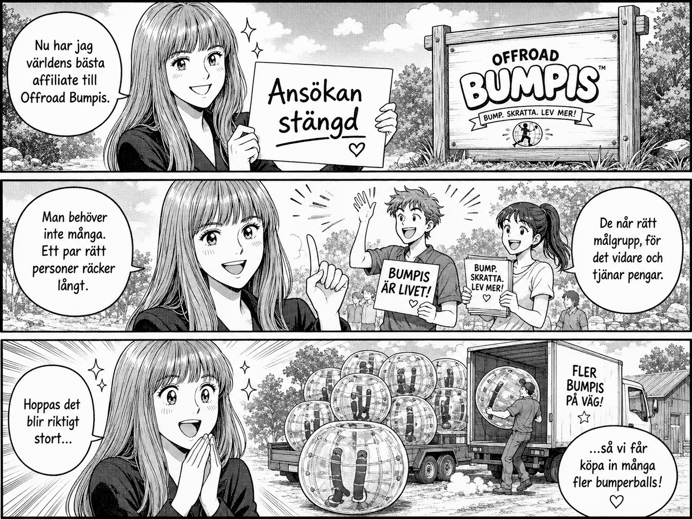

Ansökan stängd. Rätt personer räcker långt.
Jag har stängt ansökan till Offroad Bumpis affiliate.
Inte för att jag inte vill växa. Tvärtom. Jag har hittat riktigt bra personer som kan hjälpa till att få ut Bumpis till rätt folk.
Jag tror inte man behöver ha hur många affiliates som helst. Det viktiga är att de når rätt målgrupp, vill tipsa vidare och tycker att upplägget känns värt att jobba med.
Hellre några få som faktiskt har kontakt med rätt människor än en lång lista som inte leder någonstans.
Nu hoppas jag att det här kan bli stort. Fler bokningar, fler barn som får spela bumperball och kanske till slut ett ganska bra problem: att jag behöver köpa in många fler bumperballs.
Det hade inte varit dumt.